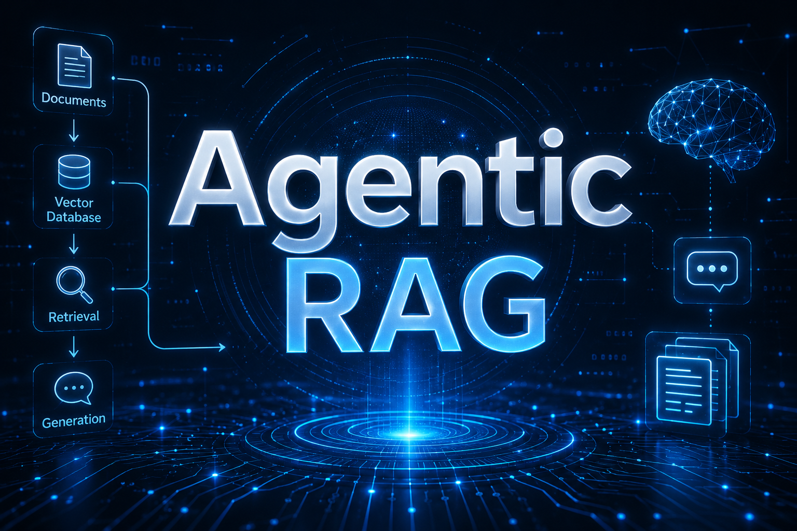
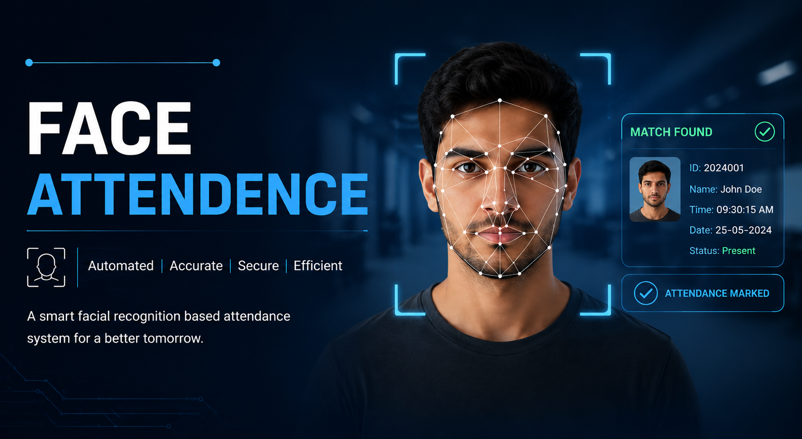
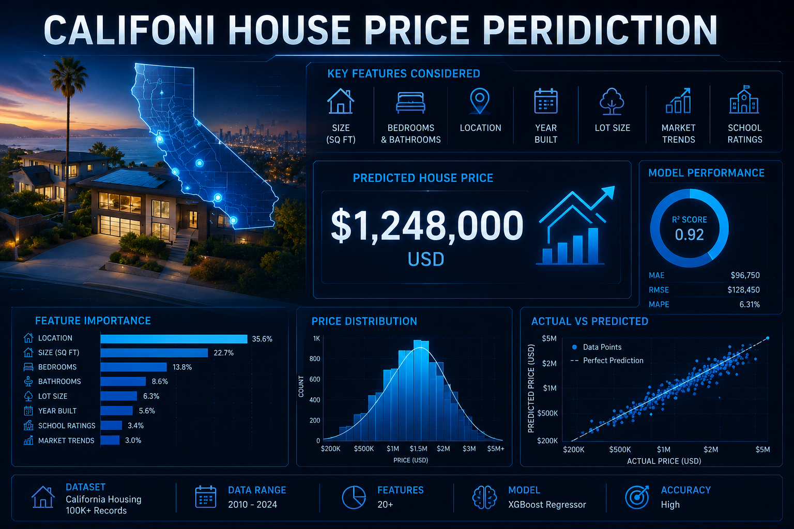
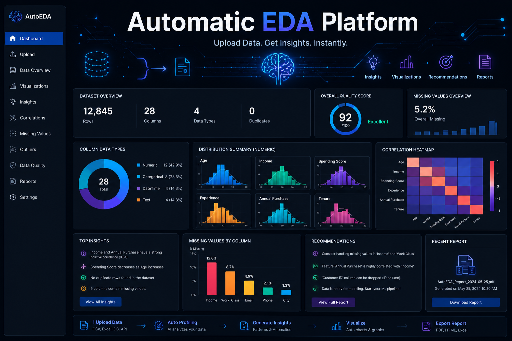
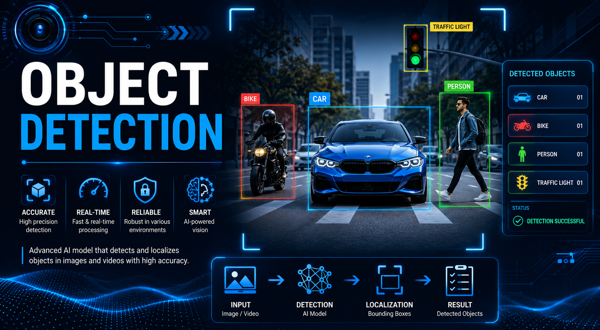
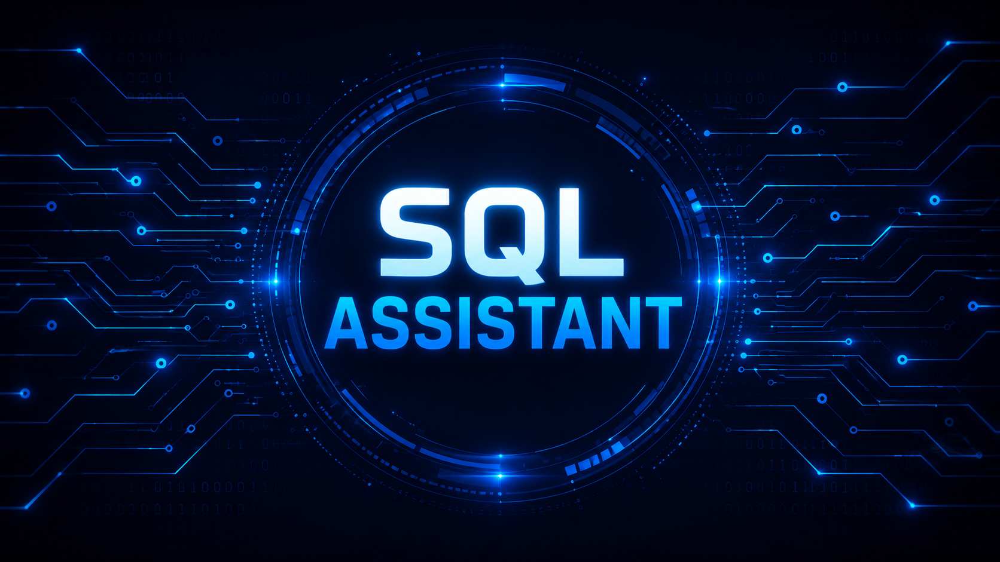
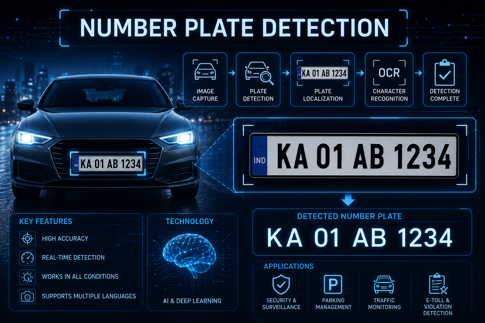

Hi, I'm Amol Shelke
I am a |
Specializing in building intelligent AI/ML systems, scalable data-driven applications, and advanced RAG solutions using Python, Deep Learning, NLP, and Generative AI technologies. Passionate about transforming complex data and intelligent algorithms into impactful real-world AI solutions.
About Me
My Mission
I am a passionate AI/ML and Data Science enthusiast focused on building intelligent and scalable solutions using modern Artificial Intelligence technologies. My interests include Machine Learning, Deep Learning, NLP, RAG, Agentic AI, and Generative AI systems. I enjoy developing AI-powered applications, predictive models, and intelligent workflows using Python and modern frameworks.
With a strong analytical mindset, I love transforming complex data into meaningful insights and smart solutions. I also create interactive dashboards and visualization tools using Streamlit and Gradio to make data more accessible and impactful. My goal is to combine innovation, data, and software engineering to solve real-world problems through Artificial Intelligence.
Education
Bachelor Computer Application
BCACareer Goals
Building high-performing enterprise AI solutions and engineering smart developer tools.
R&D / ProductFull Stack AI
Blending Python analytics with responsive modern glassmorphic web apps.
Web & AnalyticsProfessional Toolkit
Core & Languages
My primary programming building blocks.
AI, ML & Data Science
Transforming complex datasets into predictive intelligence.
Web-UI & Tools
Deploying web applications and maintaining environment pipelines.
Interactive data dashboards and models showcase.
Rapid interface generation for ML inference testing.
Source versioning, code pipelines, and collaboration.
Optimizing stored procedures, triggers, and query indexing.
Featured Projects
- All Projects
- Generative AI
- Computer Vision
- Agentic AI
- ML
- Data Analytics

Agentic RAG
Developed an intelligent document Q&A platform that enables users to upload documents and retrieve accurate answers using natural language. Features include document management, context-aware retrieval, query refinement, chat history, and a responsive dashboard interface.
Air Painter
Built an AI-powered Air Painter that allows users to create digital art using hand gestures and a webcam. Features include real-time finger tracking, multiple drawing tools, gesture-based controls, undo functionality, and artwork saving.

Face Attendance
Built a Face Recognition Attendance System that automates attendance logging using real-time facial recognition. The application supports dynamic face enrollment, duplicate-entry prevention, timestamp-based tracking, and live visual feedback for efficient attendance management.

House Price Prediction
Built a Machine Learning application for California House Price Prediction with support for single and batch predictions. The project integrates a FastAPI backend, interactive user interface, and Docker-based deployment for efficient model serving.

Automated EDA Dashboard
Developed an interactive EDA dashboard that simplifies data exploration, cleaning, and visualization. The application enables users to analyze datasets, detect and handle missing values and outliers, compare original and cleaned data, and generate insightful visualizations through an intuitive web interface.

YOLO Object Detection
Built a real-time object detection and tracking application using YOLO models, supporting image, video, and webcam inputs. The platform offers accurate object recognition, live tracking, customizable detection controls, and an intuitive interface for computer vision applications.

AI-Powered SQL Assistant
Built an AI-powered SQL Assistant that transforms natural language questions into SQL queries, executes them on a database, and presents results through an interactive interface. The system also explains generated queries to help users understand and learn SQL concepts.

Number Plate Detection
Built an Automatic Number Plate Recognition (ANPR) system that uses computer vision and OCR to detect, recognize, and log vehicle license plates from real-time video streams. The solution enables accurate vehicle identification and automated data recording.
Learning Journey
Timeline
AI/ML & Data Science Career Journey
Actively seeking opportunities in Artificial Intelligence, Machine Learning, Data Science, and Python Development. Continuously enhancing skills through hands-on projects, advanced AI research, and exploration of Agentic AI, RAG systems, and intelligent automation solutions.
Data Science & Artificial Intelligence Specialization
Completed intensive training in Data Science, Machine Learning, Deep Learning, Natural Language Processing (NLP), Retrieval-Augmented Generation (RAG), and Generative AI. Built AI-powered applications, predictive models, and interactive data visualization projects using Python, Streamlit, and modern AI frameworks
BCA
Built a strong foundation in programming, databases, web development, software engineering, and problem-solving. Developed proficiency in Python, SQL, and modern development tools while completing academic and personal projects
Certifications & Learning
Deep Learning Specialization
DeepLearning.AI | Coursera
Completed 2025LangChain & GenAI Engineering
AI Association | Industry Certified
Completed 2025Advanced Database Systems & SQL Server
Microsoft Certified Professional
Completed 2024